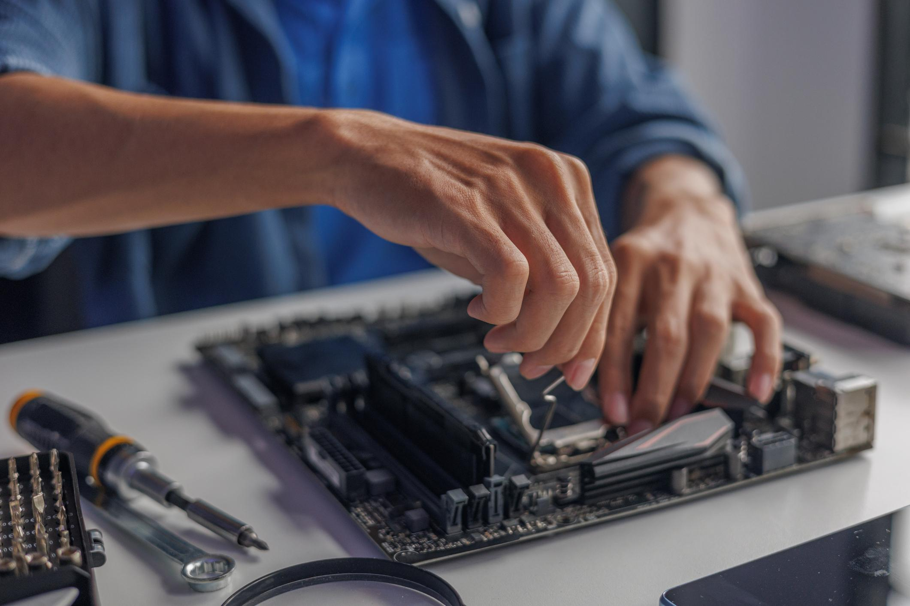

Computadoras
Si tu PC o notebook va lenta, se calienta, se reinicia o no enciende, la revisamos y te decimos la causa real antes de reparar.
Qué incluye
- Diagnóstico y reparación de PC y notebooks
- Limpieza interna y cambio de pasta térmica
- Formateo e instalación de sistema y programas
- Ampliación de memoria RAM y discos SSD
- Armado de PC a medida

Trabajos realizados
Equipos que ya pasaron por el taller.

Contá qué se hizo en este trabajo.

Contá qué se hizo en este trabajo.

Contá qué se hizo en este trabajo.